Clustering
Katharina Hembach
5/28/2020
Last updated: 2020-06-26
Checks: 7 0
Knit directory: neural_scRNAseq/
This reproducible R Markdown analysis was created with workflowr (version 1.6.2). The Checks tab describes the reproducibility checks that were applied when the results were created. The Past versions tab lists the development history.
Great! Since the R Markdown file has been committed to the Git repository, you know the exact version of the code that produced these results.
Great job! The global environment was empty. Objects defined in the global environment can affect the analysis in your R Markdown file in unknown ways. For reproduciblity it’s best to always run the code in an empty environment.
The command set.seed(20200522) was run prior to running the code in the R Markdown file. Setting a seed ensures that any results that rely on randomness, e.g. subsampling or permutations, are reproducible.
Great job! Recording the operating system, R version, and package versions is critical for reproducibility.
Nice! There were no cached chunks for this analysis, so you can be confident that you successfully produced the results during this run.
Great job! Using relative paths to the files within your workflowr project makes it easier to run your code on other machines.
Great! You are using Git for version control. Tracking code development and connecting the code version to the results is critical for reproducibility.
The results in this page were generated with repository version afe57cc. See the Past versions tab to see a history of the changes made to the R Markdown and HTML files.
Note that you need to be careful to ensure that all relevant files for the analysis have been committed to Git prior to generating the results (you can use wflow_publish or wflow_git_commit). workflowr only checks the R Markdown file, but you know if there are other scripts or data files that it depends on. Below is the status of the Git repository when the results were generated:
Ignored files:
Ignored: .DS_Store
Ignored: .Rhistory
Ignored: .Rproj.user/
Ignored: ._.DS_Store
Ignored: ._MA.pdf
Ignored: ._MA2.pdf
Ignored: ._MA_plots.pdf
Ignored: ._Rplots.pdf
Ignored: .__workflowr.yml
Ignored: ._hm.pdf
Ignored: ._neural_scRNAseq.Rproj
Ignored: ._sample5_MA_2nd_pop.pdf
Ignored: ._sample5_QC_2nd_pop.pdf
Ignored: ._tmp.pdf
Ignored: ._tmp_detected.pdf
Ignored: ._tmp_manual_discard.pdf
Ignored: ._tmp_manual_discard1.pdf
Ignored: ._tmp_manual_discard_all.pdf
Ignored: ._tmp_manual_discard_all1.pdf
Ignored: analysis/.DS_Store
Ignored: analysis/.Rhistory
Ignored: analysis/._.DS_Store
Ignored: analysis/._01-preprocessing.Rmd
Ignored: analysis/._01-preprocessing.html
Ignored: analysis/._02.1-SampleQC.Rmd
Ignored: analysis/._03-filtering.Rmd
Ignored: analysis/._04-clustering.Rmd
Ignored: analysis/._04-clustering.knit.md
Ignored: analysis/._04.1-cell_cycle.Rmd
Ignored: analysis/._05-annotation.Rmd
Ignored: analysis/.__site.yml
Ignored: analysis/._additional_filtering.Rmd
Ignored: analysis/._additional_filtering_clustering.Rmd
Ignored: analysis/._index.Rmd
Ignored: analysis/01-preprocessing_cache/
Ignored: analysis/02-1-SampleQC_cache/
Ignored: analysis/02-quality_control_cache/
Ignored: analysis/02.1-SampleQC_cache/
Ignored: analysis/03-filtering_cache/
Ignored: analysis/04.1-cell_cycle_cache/
Ignored: analysis/05-annotation_cache/
Ignored: analysis/additional_filtering_cache/
Ignored: analysis/additional_filtering_clustering_cache/
Ignored: analysis/sample5_QC_cache/
Ignored: data/.DS_Store
Ignored: data/._.DS_Store
Ignored: data/._.smbdeleteAAA17ed8b4b
Ignored: data/._metadata.csv
Ignored: data/data_sushi/
Ignored: data/filtered_feature_matrices/
Ignored: output/.DS_Store
Ignored: output/._.DS_Store
Ignored: output/additional_filtering.rds
Ignored: output/figures/
Ignored: output/sce_01_preprocessing.rds
Ignored: output/sce_02_quality_control.rds
Ignored: output/sce_03_filtering.rds
Ignored: output/sce_preprocessing.rds
Ignored: output/so_04_1_cell_cycle.rds
Ignored: output/so_04_clustering.rds
Ignored: output/so_additional_filtering_clustering.rds
Untracked files:
Untracked: MA.pdf
Untracked: MA2.pdf
Untracked: MA_plots.pdf
Untracked: Rplots.pdf
Untracked: analysis/additional_filtering.Rmd
Untracked: analysis/additional_filtering_clustering.Rmd
Untracked: analysis/sample5_QC.Rmd
Untracked: analysis/tabsets.Rmd
Untracked: hm.pdf
Untracked: sample5_MA_2nd_pop.pdf
Untracked: sample5_QC_2nd_pop.pdf
Untracked: scripts/
Untracked: tmp.pdf
Untracked: tmp_detected.pdf
Untracked: tmp_manual_discard.pdf
Untracked: tmp_manual_discard1.pdf
Untracked: tmp_manual_discard_all.pdf
Untracked: tmp_manual_discard_all1.pdf
Unstaged changes:
Modified: analysis/_site.yml
Note that any generated files, e.g. HTML, png, CSS, etc., are not included in this status report because it is ok for generated content to have uncommitted changes.
These are the previous versions of the repository in which changes were made to the R Markdown (analysis/04-clustering.Rmd) and HTML (docs/04-clustering.html) files. If you’ve configured a remote Git repository (see ?wflow_git_remote), click on the hyperlinks in the table below to view the files as they were in that past version.
| File | Version | Author | Date | Message |
|---|---|---|---|---|
| Rmd | afe57cc | khembach | 2020-06-26 | additional filtering of sample 5 and 6 |
| html | 06330b1 | khembach | 2020-06-22 | Build site. |
| Rmd | f349423 | khembach | 2020-06-21 | regress out number of UMIs and perc mitochondrial features; cyclone |
| html | 7cca30c | khembach | 2020-06-08 | Build site. |
| Rmd | 8cd9077 | khembach | 2020-06-08 | add DR QC plot |
| html | 0c0c432 | khembach | 2020-05-29 | Build site. |
| Rmd | 0e0adc9 | khembach | 2020-05-29 | add PCA plots |
| html | a94efaa | khembach | 2020-05-29 | Build site. |
| Rmd | 7f5c1f8 | khembach | 2020-05-29 | dimension reduction and clustering |
# increase future's maximum allowed size of exported globals to 4GB
# the default is 2GB
options(future.globals.maxSize = 4096 * 1024 ^ 2)Load packages
library(cowplot)
library(ggplot2)
library(Seurat)
library(SingleCellExperiment)
library(stringr)Load data
sce <- readRDS(file.path("output", "sce_03_filtering.rds"))Normalization
# create SeuratObject
so <- CreateSeuratObject(
counts = counts(sce),
meta.data = data.frame(colData(sce)),
project = "neural_cultures")
# split by sample
cells_by_sample <- split(colnames(sce), sce$sample_id)
so <- lapply(cells_by_sample, function(i) subset(so, cells = i))
## log normalize the data using a scaling factor of 10000
so <- lapply(so, NormalizeData, verbose = FALSE, scale.factor = 10000,
normalization.method = "LogNormalize")## Identify the top 2000 genes with high cell-to-cell variation
so <- lapply(so, FindVariableFeatures, nfeatures = 2000,
selection.method = "vst", verbose = FALSE)
## Plot variable features
for (i in names(so)) {
# Identify the 10 most highly variable genes
top10 <- head(VariableFeatures(so[[i]]), 10)
p <- VariableFeaturePlot(so[[i]])
p <- LabelPoints(plot = p, points = top10,
labels = str_split(top10, "\\.", simplify = TRUE)[,2],
repel = TRUE)
print(p)
}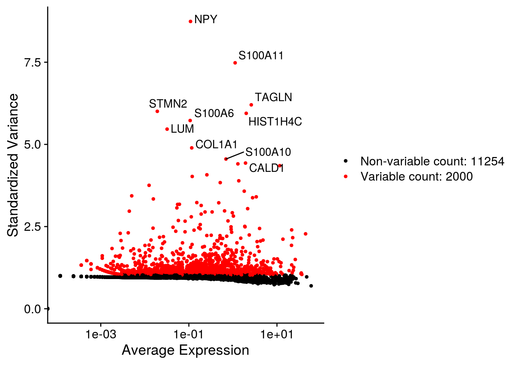
| Version | Author | Date |
|---|---|---|
| 7cca30c | khembach | 2020-06-08 |
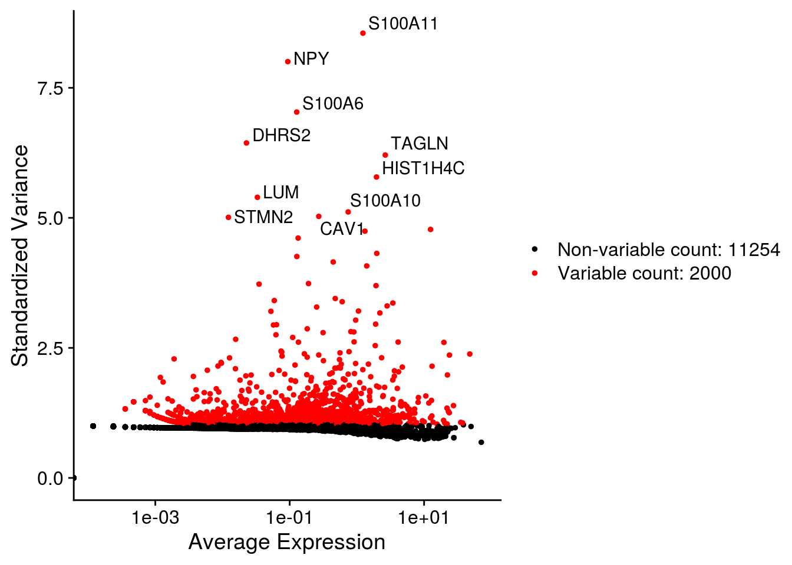
| Version | Author | Date |
|---|---|---|
| 7cca30c | khembach | 2020-06-08 |
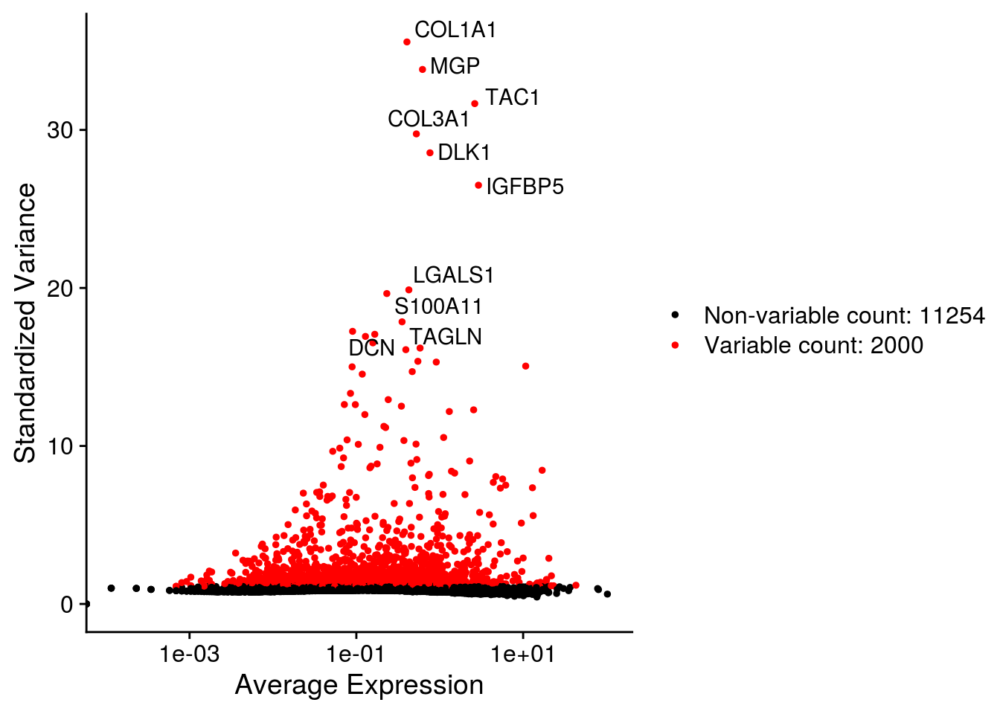
| Version | Author | Date |
|---|---|---|
| 7cca30c | khembach | 2020-06-08 |
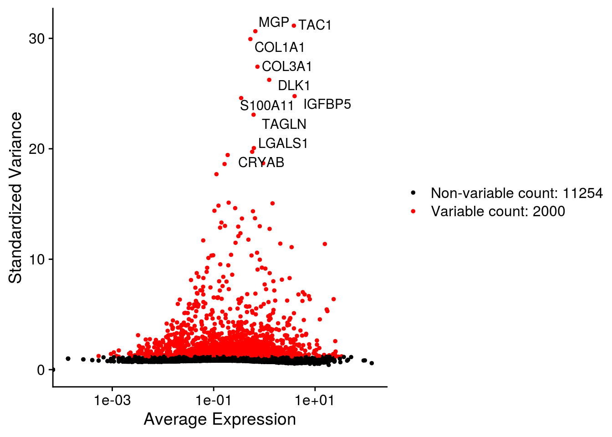
| Version | Author | Date |
|---|---|---|
| 7cca30c | khembach | 2020-06-08 |
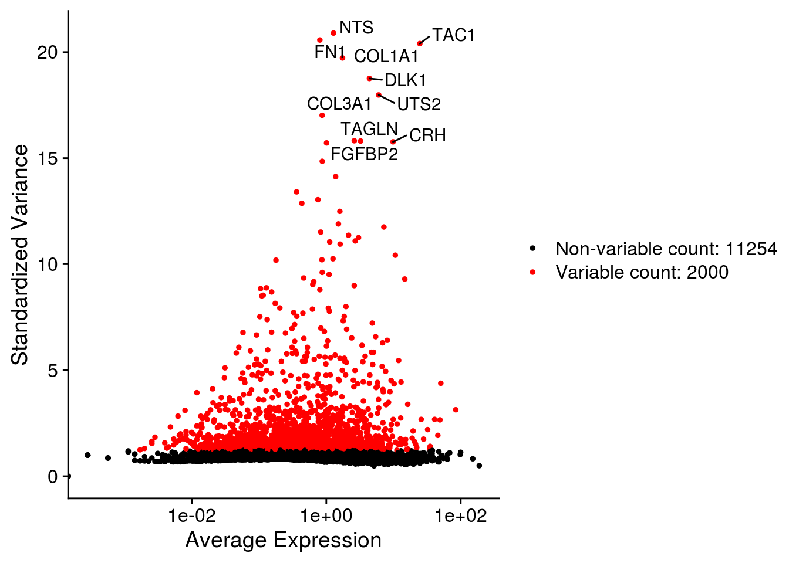
| Version | Author | Date |
|---|---|---|
| 7cca30c | khembach | 2020-06-08 |
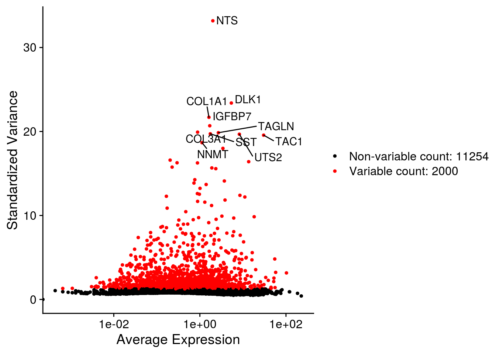
| Version | Author | Date |
|---|---|---|
| 7cca30c | khembach | 2020-06-08 |
# find anchors & integrate
as <- FindIntegrationAnchors(so, verbose = FALSE)
so <- IntegrateData(anchorset = as, dims = seq_len(30), verbose = FALSE)
## We scale the data so that mean expression is 0 and variance is 1, across cells
## We also regress out the number of UMIs and the percentage of mitochondrial UMIs
## per cell.
DefaultAssay(so) <- "integrated"
so <- ScaleData(so, verbose = FALSE, vars.to.regress = c("sum",
"subsets_Mt_percent"))Dimension reduction
We perform dimension reduction with t-SNE and UMAP based on PCA results.
so <- RunPCA(so, npcs = 30, verbose = FALSE)
so <- RunTSNE(so, reduction = "pca", dims = seq_len(20),
seed.use = 1, do.fast = TRUE, verbose = FALSE)
so <- RunUMAP(so, reduction = "pca", dims = seq_len(20),
seed.use = 1, verbose = FALSE)Plot PCA results
# top genes that are associated with the first two PCs
VizDimLoadings(so, dims = 1:2, reduction = "pca")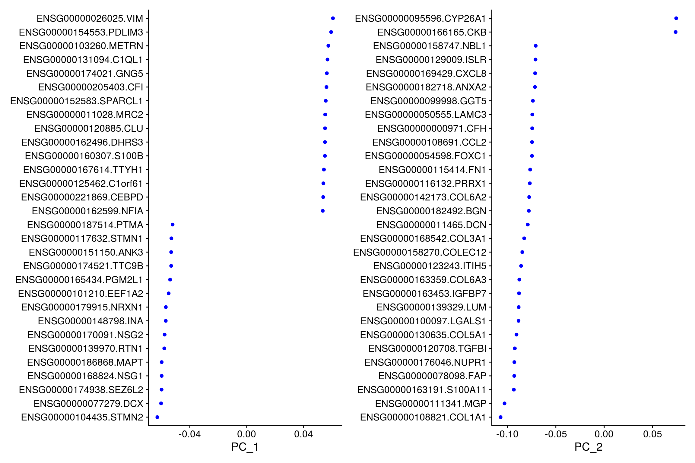
## PCA plot
DimPlot(so, reduction = "pca", group.by = "sample_id")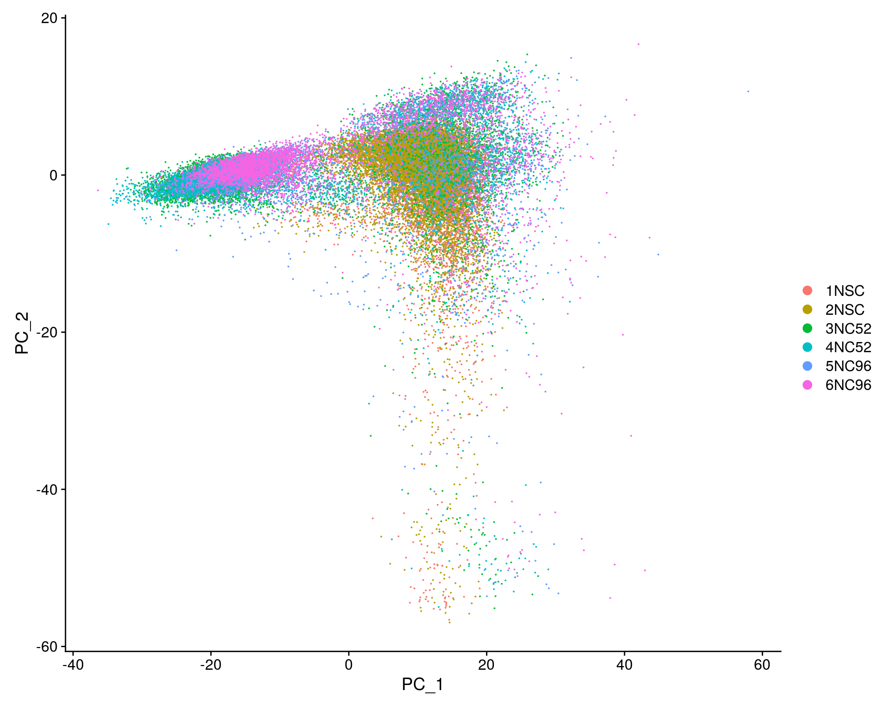
# elbow plot with the ranking of PCs based on the % of variance explained
ElbowPlot(so, ndims = 30)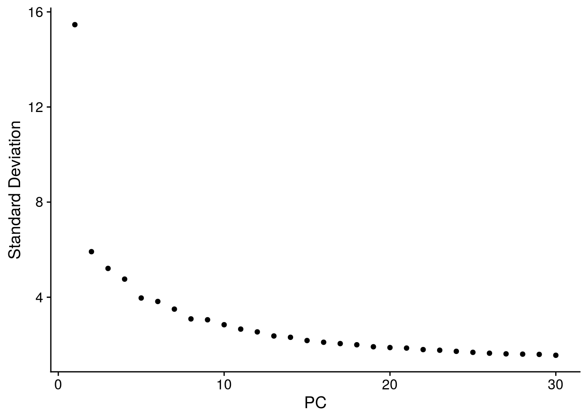
## heatmaps of the top 20 PCs and the 500 most extreme cells for each compenent
DimHeatmap(so, dims = 1:20, cells = 500, balanced = TRUE, nfeatures = 20 )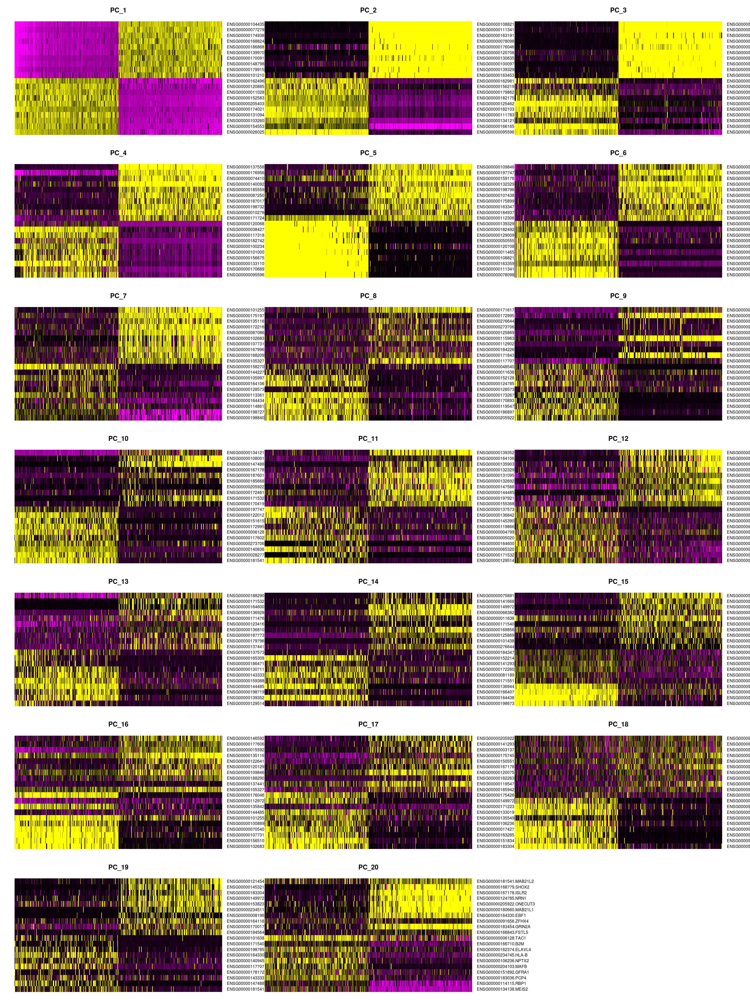
Clustering
We cluster the cells using the reduced PCA dimensions.
so <- FindNeighbors(so, reduction = "pca", dims = seq_len(20), verbose = FALSE)
for (res in c(0.1, 0.2, 0.4, 0.8, 1, 1.2, 2))
so <- FindClusters(so, resolution = res, random.seed = 1, verbose = FALSE)Dimension reduction plots
We plot the dimension reduction (DR) and color by sample, group and cluster ID
thm <- theme(aspect.ratio = 1, legend.position = "none")
ps <- lapply(c("sample_id", "group_id", "ident"), function(u) {
p1 <- DimPlot(so, reduction = "tsne", group.by = u) + thm
p2 <- DimPlot(so, reduction = "umap", group.by = u)
lgd <- get_legend(p2)
p2 <- p2 + thm
list(p1, p2, lgd)
plot_grid(p1, p2, lgd, nrow = 1,
rel_widths = c(1, 1, 0.5))
})
plot_grid(plotlist = ps, ncol = 1)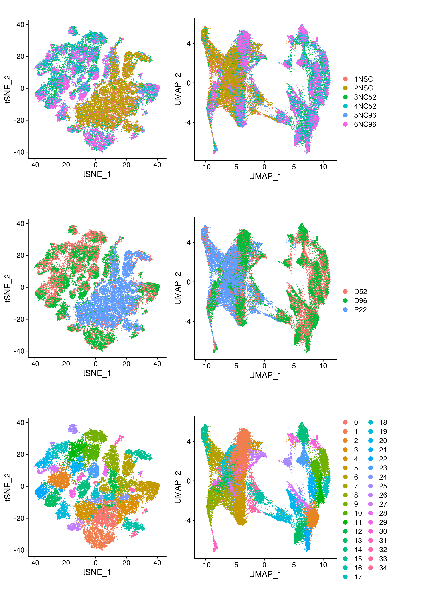
QC on DR plots
cs <- sample(colnames(so), 1e4) ## subsample cells
.plot_features <- function(so, dr, id) {
FeaturePlot(so, cells = cs, features = id, reduction = dr, pt.size = 0.4,
cols = c("grey", "blue")) +
guides(col = guide_legend(nrow = 11,
override.aes = list(size = 3, alpha = 1))) +
theme_void() + theme(aspect.ratio = 1)
}
ids <- c("sum", "detected", "subsets_Mt_percent")
for (id in ids) {
cat("## ", id, "\n")
p1 <- .plot_features(so, "tsne", id)
lgd <- get_legend(p1)
p1 <- p1 + theme(legend.position = "none") + ggtitle("tSNE")
p2 <- .plot_features(so, "umap", id) + theme(legend.position = "none") +
ggtitle("UMAP")
ps <- plot_grid(plotlist = list(p1, p2), nrow = 1)
p <- plot_grid(ps, lgd, nrow = 1, rel_widths = c(1, 0.2))
print(p)
cat("\n\n")
}
Save Seurat object to RDS
saveRDS(so, file.path("output", "so_04_clustering.rds"))
sessionInfo()R version 4.0.0 (2020-04-24)
Platform: x86_64-pc-linux-gnu (64-bit)
Running under: Ubuntu 16.04.6 LTS
Matrix products: default
BLAS: /usr/local/R/R-4.0.0/lib/libRblas.so
LAPACK: /usr/local/R/R-4.0.0/lib/libRlapack.so
locale:
[1] LC_CTYPE=en_US.UTF-8 LC_NUMERIC=C
[3] LC_TIME=en_US.UTF-8 LC_COLLATE=en_US.UTF-8
[5] LC_MONETARY=en_US.UTF-8 LC_MESSAGES=en_US.UTF-8
[7] LC_PAPER=en_US.UTF-8 LC_NAME=C
[9] LC_ADDRESS=C LC_TELEPHONE=C
[11] LC_MEASUREMENT=en_US.UTF-8 LC_IDENTIFICATION=C
attached base packages:
[1] parallel stats4 stats graphics grDevices utils datasets
[8] methods base
other attached packages:
[1] HDF5Array_1.16.0 rhdf5_2.32.0
[3] stringr_1.4.0 SingleCellExperiment_1.10.1
[5] SummarizedExperiment_1.18.1 DelayedArray_0.14.0
[7] matrixStats_0.56.0 Biobase_2.48.0
[9] GenomicRanges_1.40.0 GenomeInfoDb_1.24.0
[11] IRanges_2.22.2 S4Vectors_0.26.1
[13] BiocGenerics_0.34.0 Seurat_3.1.5
[15] ggplot2_3.3.0 cowplot_1.0.0
[17] workflowr_1.6.2
loaded via a namespace (and not attached):
[1] nlme_3.1-148 tsne_0.1-3 bitops_1.0-6
[4] fs_1.4.1 RcppAnnoy_0.0.16 RColorBrewer_1.1-2
[7] httr_1.4.1 rprojroot_1.3-2 sctransform_0.2.1
[10] tools_4.0.0 backports_1.1.7 R6_2.4.1
[13] irlba_2.3.3 KernSmooth_2.23-17 uwot_0.1.8
[16] lazyeval_0.2.2 colorspace_1.4-1 withr_2.2.0
[19] tidyselect_1.1.0 gridExtra_2.3 compiler_4.0.0
[22] git2r_0.27.1 plotly_4.9.2.1 labeling_0.3
[25] scales_1.1.1 lmtest_0.9-37 ggridges_0.5.2
[28] pbapply_1.4-2 rappdirs_0.3.1 digest_0.6.25
[31] rmarkdown_2.1 XVector_0.28.0 pkgconfig_2.0.3
[34] htmltools_0.4.0 htmlwidgets_1.5.1 rlang_0.4.6
[37] farver_2.0.3 zoo_1.8-8 jsonlite_1.6.1
[40] ica_1.0-2 dplyr_0.8.5 RCurl_1.98-1.2
[43] magrittr_1.5 GenomeInfoDbData_1.2.3 patchwork_1.0.0
[46] Matrix_1.2-18 Rhdf5lib_1.10.0 Rcpp_1.0.4.6
[49] munsell_0.5.0 ape_5.3 reticulate_1.16
[52] lifecycle_0.2.0 stringi_1.4.6 whisker_0.4
[55] yaml_2.2.1 zlibbioc_1.34.0 MASS_7.3-51.6
[58] Rtsne_0.15 plyr_1.8.6 grid_4.0.0
[61] listenv_0.8.0 promises_1.1.0 ggrepel_0.8.2
[64] crayon_1.3.4 lattice_0.20-41 splines_4.0.0
[67] knitr_1.28 pillar_1.4.4 igraph_1.2.5
[70] future.apply_1.5.0 reshape2_1.4.4 codetools_0.2-16
[73] leiden_0.3.3 glue_1.4.1 evaluate_0.14
[76] data.table_1.12.8 vctrs_0.3.0 png_0.1-7
[79] httpuv_1.5.2 gtable_0.3.0 RANN_2.6.1
[82] purrr_0.3.4 tidyr_1.1.0 future_1.17.0
[85] assertthat_0.2.1 xfun_0.14 rsvd_1.0.3
[88] RSpectra_0.16-0 later_1.0.0 survival_3.1-12
[91] viridisLite_0.3.0 tibble_3.0.1 cluster_2.1.0
[94] globals_0.12.5 fitdistrplus_1.1-1 ellipsis_0.3.1
[97] ROCR_1.0-11